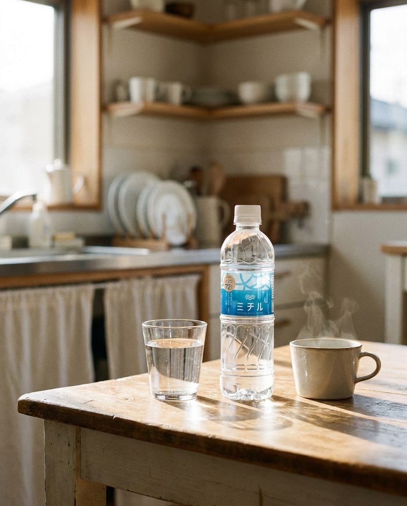

1
5/4(月) 8:00 — みどりの日
共感型
GW中の朝、ゆったり時間
GW真っ最中、ゆっくり起きた朝🌿 予定のない日って、なんだか贅沢。 カーテン開けて、軽く伸びをして、 冷蔵庫から取り出した一杯のミチルシリカ。 大分県・玖珠の天然水、硬度24mg/Lの軟水。 お休みの日こそ、内側から整えたい。 外食やお出かけが続く連休中、 水だけは大切にしたい習慣です。 #ミチルシリカ #GWの過ごし方 #みどりの日 #朝のルーティン #丁寧な暮らし